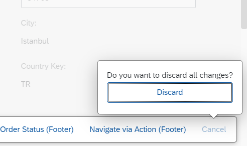

Displaying Actions on the Object Page
Displaying Actions on the Object Page
Specific rules apply when displaying actions on the object page.
Order of Actions
The default display order of actions
in
the object page header is as follows:
-
Generic actions
Examples: Save and Edit
-
Application-specific actions
They follow the order defined in the metadata.
-
Manifest-based custom actions
For more information on manifest-based custom actions, see Adding Custom
Actions Using Extension Points.
-
Related Apps button
-
Other generic actions
Example: Share functionality
Display Based on Mode
The display of actions depends on which mode the user is in:
-
In Display mode, the relevant actions are displayed in the header toolbar (see Object Page Elements).
-
In Edit or Create mode, the footer bar contains the relevant actions, for
example, Save and Cancel in Edit mode (see
the mentioned
figure), and
Create and Cancel in Create mode.

Object Page: Action Triggered from Footer Bar (Edit Mode)
You can add criticality to an action button via annotations. For more information, see Setting the Criticality for Actions.
Additional Features in SAP Fiori Elements for OData V4
If an application has set the criticality for an action, that is, if app developers have defined semantic actions, these are
automatically placed first. This means semantic actions are placed before generic actions (like Save and
Edit) and in this case the generic actions are no longer automatically emphasized.
Changing the Order of Action Buttons Specified by an Application
You can change the order of action buttons for both manifest-based actions and annotation-based actions. To do so, use
"position"
to define the placement of your action.
For more information, see the
Additional Features in SAP Fiori elements for OData
V4 section in Adding Custom Actions Using Extension Points.
Parent topic:
Previous:
Next: